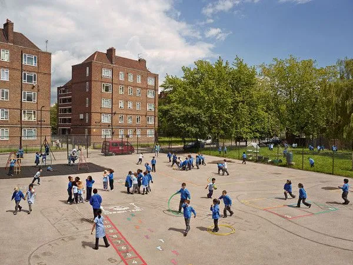

Kebiasaan Tepat Waktu
Rutinitas pagi mengajarkan siswa bahwa setiap kegiatan dimulai pada waktunya. Mereka belajar hadir lebih awal, menyiapkan diri, dan menghargai agenda bersama.
Kebiasaan kecil seperti ini sering menjadi pondasi disiplin yang kuat di kemudian hari.

Aktivitas fisik ringan di pagi hari membantu siswa lebih segar, siap fokus, dan antusias mengikuti pelajaran.
Energi Positif untuk Belajar
Olahraga pagi membantu tubuh lebih aktif dan pikiran lebih siap. Setelah bergerak, siswa biasanya lebih mudah berkonsentrasi dan tidak terlalu pasif saat belajar.
Di sisi lain, upacara melatih ketertiban, sikap hormat, dan kebersamaan dalam satu komunitas sekolah.
Pentingnya Rutinitas yang Konsisten
Manfaat rutinitas pagi akan terasa jika dilakukan secara konsisten. Sekolah perlu menjaga kegiatan tetap tertib, singkat, dan bermakna agar siswa tidak melihatnya hanya sebagai formalitas.
Saat kebiasaan positif dibangun berulang, siswa akan lebih mudah membawa sikap disiplin itu ke banyak aspek kehidupan.